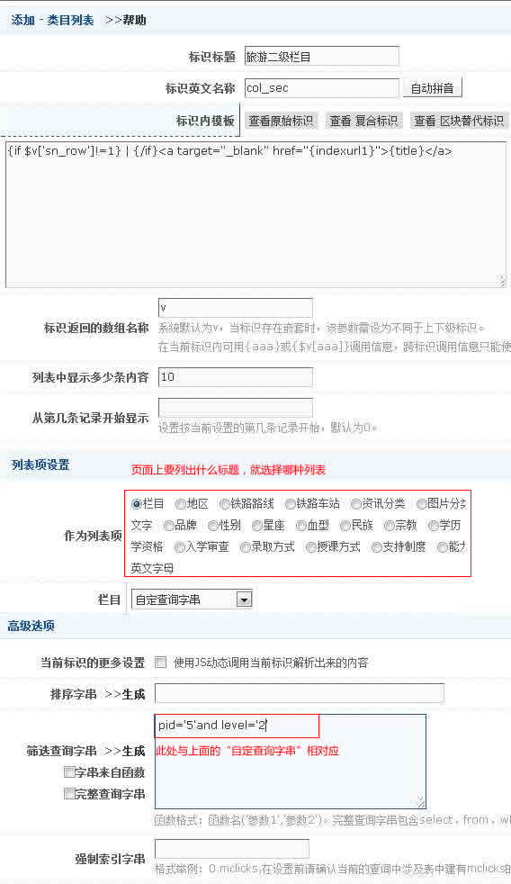
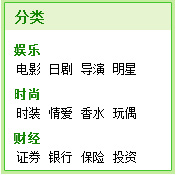
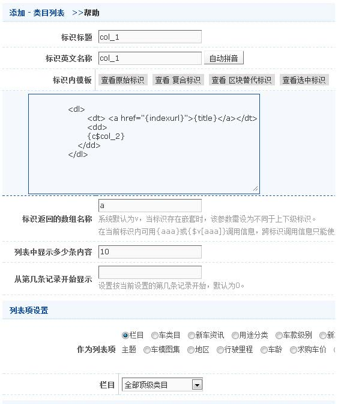
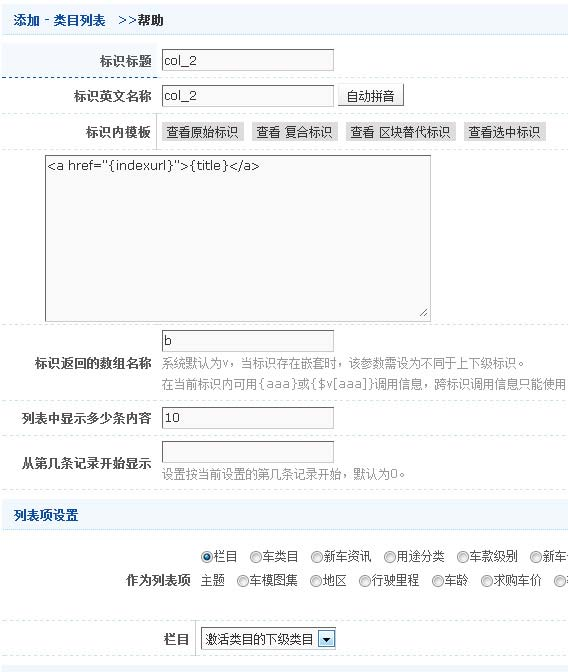

案例1
效果:
html代码:
<a target="_blank" href="#">旅游资讯</a> |
<a target="_blank" href="#">人文地理</a> |
<a target="_blank" href="#">任选日本</a> |
<a target="_blank" href="#">日本美食</a> |
<a target="_blank" href="#">线路贴士</a> |
<a target="_blank" href="#">游记攻略</a>
标识模板(template)代码:
{if $v['sn_row']!=1} | {/if}<a target="_blank" href="{indexurl1}">{title}</a>
说明
制作子导航，列出栏目下想要显示的子栏目。例如旅游下的旅游资讯、人文地理…等。参数:作为列表项设置为栏目，栏目设置为手动指定，按住CTRL键多选想要列出的栏目,或者设置为“自定查询字串”然后筛选查询字串写上“pid='5'and level='1'”，本例采用后者，列表的父级是旅游（id为“5”）的二级分类（level='1'）。if为判断语句，以{if}开始{/if}结束，sn_row为内置标签，记录当前循环的次数。
整体截图如下：

案例2
效果:

html代码:
<dl>
<dt> <a href="#">娱乐</a></dt>
<dd>
<a href="#">电影</a>
<a href="#">日剧</a>
<a href="#">导演</a>
<a href="#">明星</a>
</dd>
</dl>
<dl>
<dt> <a href="#">时尚</a></dt>
<dd>
<a href="#">时装</a>
<a href="#">情爱</a>
<a href="#">香水</a>
<a href="#">玩偶</a>
</dd>
</dl>
<dl>
<dt> <a href="#">财经</a></dt>
<dd>
<a href="#">证券</a>
<a href="#">银行</a>
<a href="#">保险</a>
<a href="#">投资</a>
</dd>
</dl>
标识模板(template)代码:
col_1中的代码
<dl>
<dt> <a href="{indexurl}">{title}</a></dt>
<dd>
{c$col_2}
</dd>
</dl>
col_2中的代码
<a href="{indexurl}">{title}</a>
说明
列出全部一级栏目以及对应的二级栏目。本例中有两个类目列表标签嵌套，第一个标签{c$col_1}列出一级栏目，并激活下级栏目，第二个标签{c$col_2}列出二级栏目
整体截图如下：
{c$col_1}:

{c$col_2}:

注：标识返回的数组名称不同